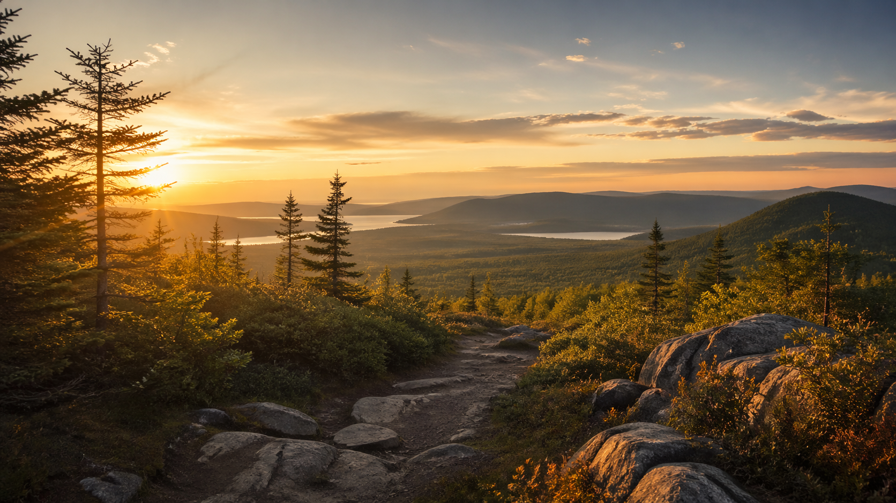
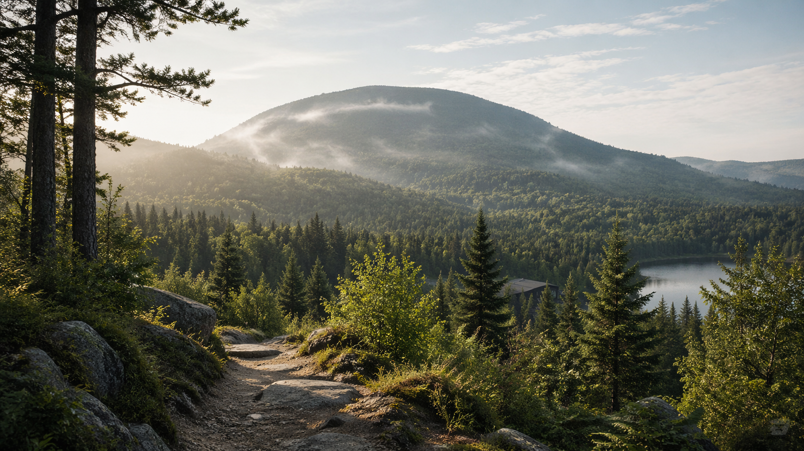

Vue apaisante
Un panorama inspirant pour décrocher du quotidien et retrouver un état de calme.
La montagne invite naturellement au calme, à la contemplation et à la pleine conscience. C’est un endroit parfait pour prendre du recul, respirer profondément et revenir à l’essentiel.
Que ce soit pour une marche paisible, un moment de silence ou une pause de ressourcement, cet espace apporte une sensation de liberté et de paix intérieure.

Une ambiance naturelle propice au bien-être, à l’ancrage et à la reconnexion.
Un panorama inspirant pour décrocher du quotidien et retrouver un état de calme.
Des sentiers et espaces parfaits pour ralentir, observer et rester dans le moment présent.
Un environnement vivant et ressourçant qui soutient la détente du corps et de l’esprit.

“En montagne, on retrouve l’espace nécessaire pour calmer le mental et laisser respirer l’âme.”